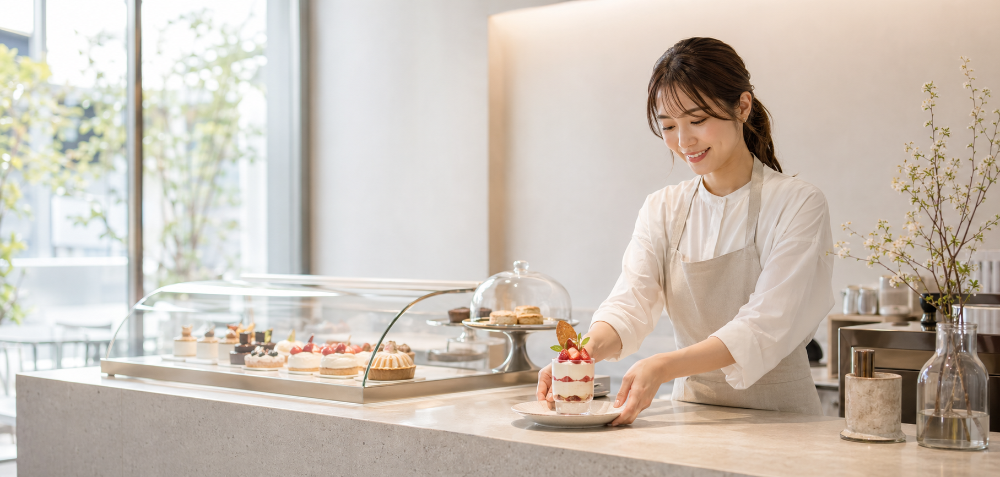
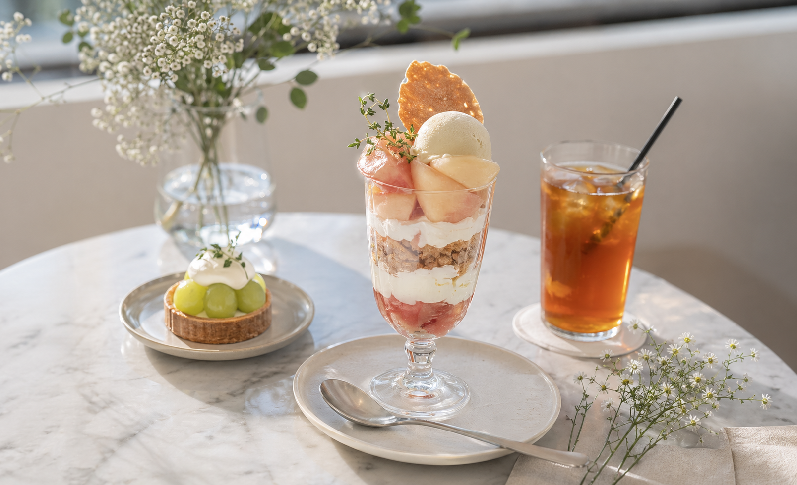

季節のタルト
果実とクリームの軽やかなバランス。
¥780
Patisserie cafe
季節のタルト、香りの良いコーヒー、手土産にしたくなる焼き菓子。写真だけで「行きたい」が生まれるカフェサイトです。


Taste and scene
カフェのWEBサイトは写真の温度感が命。空間、商品、使い方をまとめて伝え、来店と注文の両方へつなげます。
旬の果物や限定メニューで再訪したくなる動機を作ります。
焼き菓子や箱入り商品も、贈り物として見せます。
イートイン、テイクアウト、予約注文を迷わず選べます。
ゆっくり過ごす午後に。
帰り道に小さなご褒美。
大切な人への贈り物に。
限定品は事前注文へ。
世界観のある写真と導線で、カフェの売上機会を増やす。
スイーツやドリンクの魅力を大きく見せます。
店内利用だけでなくテイクアウトも訴求。